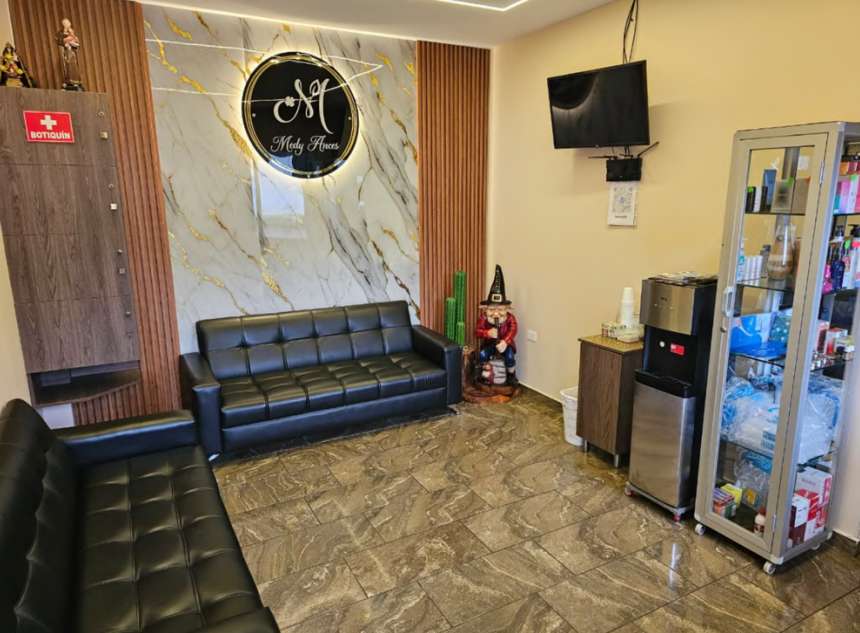

Misión
Brindar una atención respetuosa y personalizada, conservando las tradiciones ancestrales.
Medicina ancestral, tradición y bienestar
Tradición, respeto y atención personalizada.
MEDY ANCES es una microempresa dedicada a ofrecer servicios de atención espiritual, prácticas ancestrales y terapias alternativas.
Nuestro objetivo es brindar una atención cercana y personalizada, respetando las creencias, preferencias y necesidades de cada cliente.

Brindar una atención respetuosa y personalizada, conservando las tradiciones ancestrales.
Ser una microempresa reconocida por su responsabilidad, calidad de atención y respeto hacia sus clientes.
Los principios que orientan nuestra atención son:
Conoce más sobre la cultura, las tradiciones y el patrimonio de nuestro país.